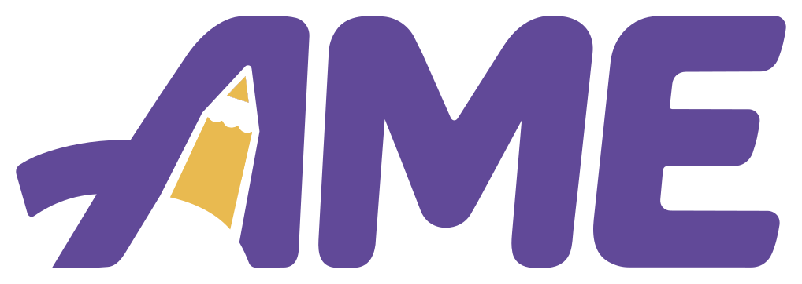

Associação Mais Educação
ONG de educação no Jacaré, Rio de Janeiro, desde 2022.
Projetos
- Reforça JacaréReforço escolar para crianças de 6 a 11 anos
- Pré-Vestibular AME Em brevePreparação para o Enem e vestibulares
- AME Qualifica Em breveCursos de cozinheiro e montador de móveis
Como ajudar
- Doe pelo PixQualquer valor ajuda a manter os projetos
- Seja voluntárioVagas abertas no Atados
- Prestação de contasVeja como os recursos são usados
Fale com a gente
R. Conselheiro Mayrink, 339, Jacaré, Rio de Janeiro